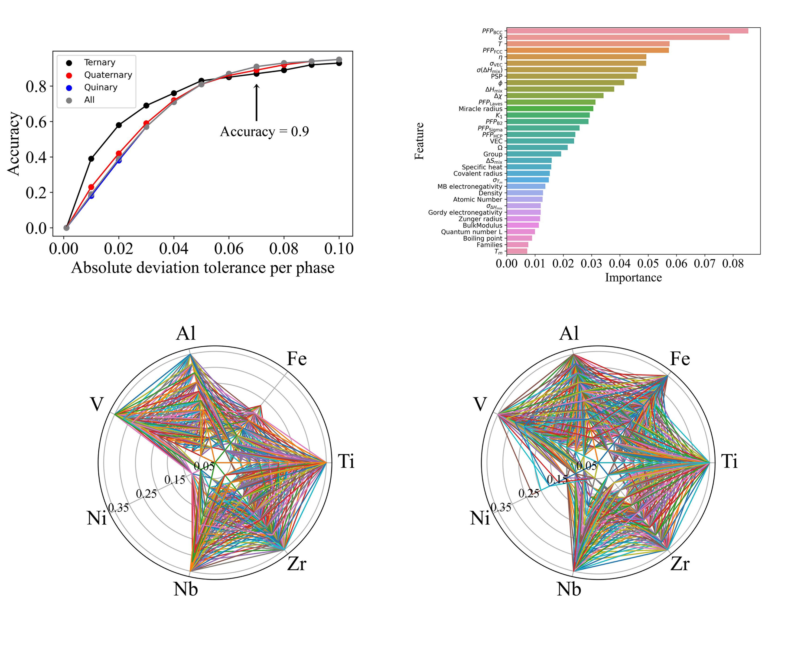
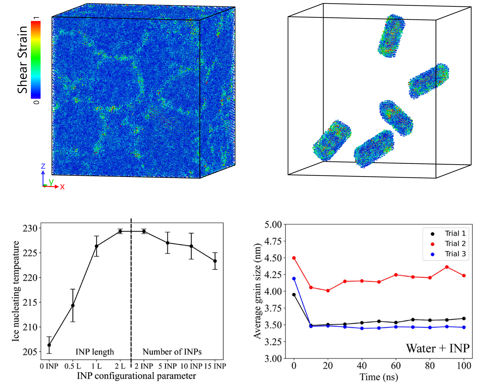
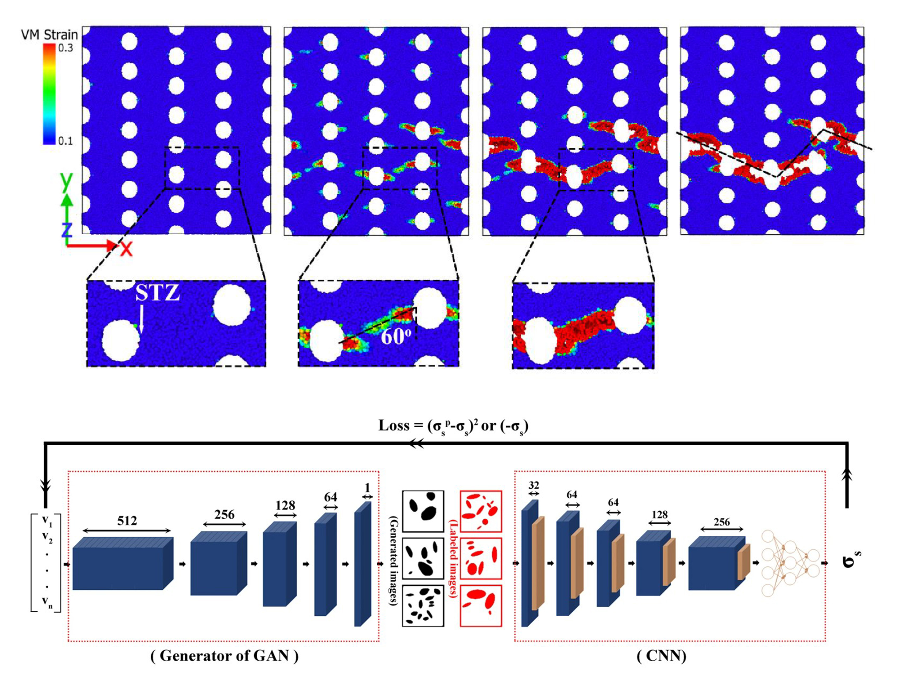

Projects
-
Project 1: Designing novel refractory multi-principal element alloys (RMPEAs) with tailored phase stability for extreme environment applications
RMPEAs have attracted significant attention due to their exceptional properties, for example, in ultra-high-temperature aerospace components. Unlike conventional alloys, which typically contain one primary element with minor additions of others, RMPEAs are composed of multiple principal elements, each with concentrations ranging from 5 to 35 atomic percent (at.%). The complex interplay of deformation mechanisms, which are chemistry and phase-dependent, directly controls the properties of RMPEAs. For example, the face-centered cubic (FCC) structure in an RMPEA improves ductility, whereas the body-centered cubic (BCC) structure enhances strength. Nevertheless, exploring the design space of RMPEAs experimentally or through conventional CALculation of PHAse Diagrams (CALPHAD) is impractical due to the vast compositional space of RMPEAs. In this project, we developed deep learning frameworks that integrate active learning, Bayesian optimization, and uncertainty quantification to guide experimental collaborators to efficiently explore this design space. These models classify phases, predict phase fractions, and estimate temperature-dependent stability, enabling accelerated discovery of promising RMPEAs. This projects contribute to establishing a closed-loop automated laboratory (CAIMEE) aimed at accelerating the discovery of novel refractory multi-principal element alloys (RMPEAs) for extreme environments.
Related publications
- Shargh, A. K., Stiles, C. D., & El-Awady, J. A. (2025). Temperature-dependent discovery of BCC refractory multi-principal element alloys: Integrating deep learning and CALPHAD calculations. Computational Materials Science, 259, 114186
- Shargh, A. K., Stiles, C. D., & El-Awady, J. A. (2025). Deep Learning Accelerated Phase Prediction of Refractory Multi-Principal Element Alloys. Acta Materialia, 120558
-
Project 2: Designing new ice nucleating proteins (INPs) to mitigate glacial ice loss
INPs are a distinct class of biological macromolecules that catalyze the freezing of supercooled water with remarkable efficiency, exceeding that of most other known heterogeneous nucleators. Because of their ability to control ice formation with high efficiency, INPs have been explored in diverse fields, including agricultural frost protection, controlled freezing in food processing and packaging, and biomedical cryopreservation. Beyond these applications, INPs have also been proposed as part of emerging strategies to mitigate the ongoing loss of polar ice sheets. While engineered INPs offer exciting potential, their performance depends heavily on a range of structural and biochemical factors such as INP length and number, orientation, sequence-specific motifs, and local interactions with water molecules. Understanding how these parameters influence ice-nucleation efficiency is essential for the rational design of robust, high-performance INPs tailored for targeted applications. In this project, we leverage molecular dynamics (MD) simulations to uncover how variations in INP density regulate nucleation efficiency, modify the microstructure of newly formed ice, and ultimately affect its mechanical performance.
Related publications
- Shargh, A. K., Stiles, C. D., & El-Awady, J. A. (2026). Effect of ice nucleating proteins on the structure-property relationships of ice: A molecular dynamics study. The Journal of Chemical Physics, 164(2)
-
Project 3: Designing novel 2D nanoporous silicon nitride (NPN) membranes with tailored mechanical properties
NPN membranes are freestanding ultrathin films that offer outstanding combination of high permeability and strong selectivity based on molecular size or charge. Such properties make NPN membranes attractive in a broad range of applications including rapid detection of intact SARS-CoV-2, biological separations, DNA translocation, and miniaturization of hemodialysis. Despite their growing use, it is well-established that for practical application of NPN membranes in some of the fields, their mechanical properties must be carefully tuned. For instance, high strength is needed for successful application of NPN membranes in wearable hemodialysis devices, while enhanced deformability is desired for DNA translocation studies. In this project, we leverage MD simulations to develop rational design of pore architectures that tune the ductility of NPN membranes based on different modes of shear band – nanopore interactions. In addition, we develop a machine learning framework for the inverse design of NPN microstructures with tailored strength.
Related publications
- Shargh, A. K., & Abdolrahim, N. (2023). An interpretable deep learning approach for designing nanoporous silicon nitride membranes with tunable mechanical properties. npj Computational Materials, 9(1), 82
- Shargh, A. K., Madejski, G. R., McGrath, J. L., & Abdolrahim, N. (2021). Mechanical properties and deformation mechanisms of amorphous nanoporous silicon nitride membranes via combined atomistic simulations and experiments. Acta Materialia, 117451
- Shargh, A. K., Madejski, G. R., McGrath, J. L., & Abdolrahim, N. (2020). Molecular dynamics simulations of brittle to ductile transition in failure mechanism of silicon nitride nanoporous membranes. Materials Today Communications, 25, 101657
- Shargh, A. K., & Abdolrahim, N. (2019). Molecular dynamics simulation of structural changes in single crystalline silicon nitride nanomembrane. Ceramics International, 45(17), 23070–23077
-
Project 4: Resolving the structure of room-temperature vitreous ice
Understanding the phase behavior of water is essential in geoscience, extreme biology, biological imaging, chemistry, and physics. Vitreous phases of water are of particular importance because they avoid the typical volumetric expansion associated with ice-crystal formation and therefore have direct implications for biological imaging and cryopreservation. There has been an ongoing debate regarding the possibility of forming vitreous phases of water at room temperature. In this project, we leverage molecular dynamics (MD) simulations and collaborate with experimentalists to confirm the existence of vitreous ice at room temperature in mixed-phase samples containing ice VI. We demonstrate that Raman scattering or X-ray diffraction alone can lead to misleading phase identification, and that accurate characterization of these mixed-phase materials requires the combined use of XRD and Raman spectroscopy.
Related publications
- Shargh, A. K., Picard, A., Hrubiak, R., Zhang, D., Hemley, R. J., Deemyad, S., & Abdolrahim, N. (2022). Coexistence of vitreous and crystalline phases of H₂O at ambient temperature. PNAS, 119(27), e2117281119